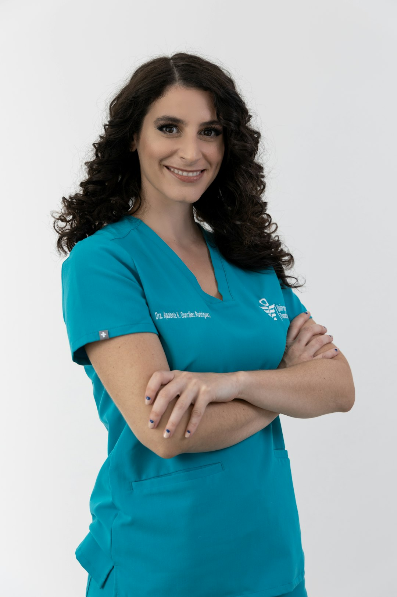
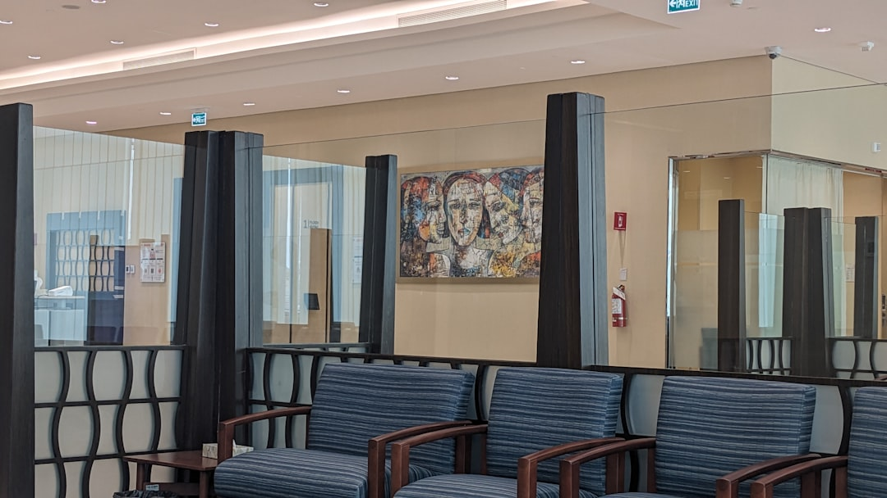
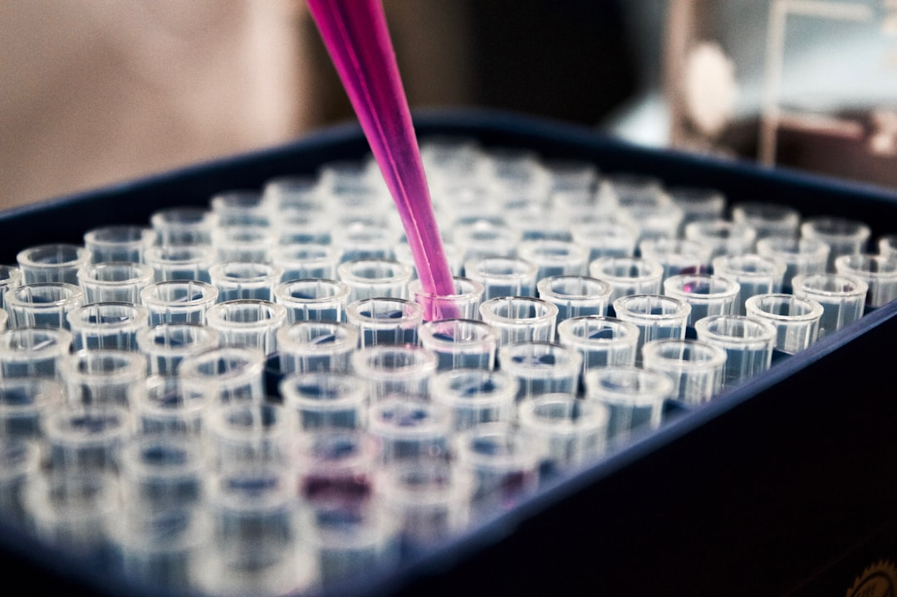

Klinik Pasuruan menghadirkan layanan kesehatan modern dengan standar premium. Pengalaman medis yang tenang, profesional, dan sepenuhnya berfokus pada Anda.
Dari pemeriksaan rutin hingga perawatan khusus, tim dokter profesional kami siap memberikan layanan medis terbaik dengan standar keselamatan modern.
Pemeriksaan kesehatan umum, diagnosis, dan penanganan penyakit akut maupun kronis dengan standar medis terbaru.
Perawatan kesehatan anak dari bayi hingga remaja. Imunisasi, pemeriksaan tumbuh kembang, dan konsultasi kesehatan anak.
Perawatan gigi dan mulut secara komprehensif: scaling, penambalan, cabut gigi, dan perawatan estetika gigi.
Paket pemeriksaan kesehatan menyeluruh untuk deteksi dini penyakit, dengan laporan hasil yang komprehensif.
Layanan vaksinasi untuk semua usia — anak dewasa hingga lansia — dengan stok vaksin terverifikasi dan tenaga medis bersertifikat.
Diagnosis laboratorium cepat dan akurat dengan peralatan modern. Hasil dapat diambil dalam hitungan jam.
Apotek klinik dengan obat-obatan umum, resep dokter, dan produk kesehatan yang tersedia dengan harga terjangkau.
Layanan perawatan di rumah untuk pasien yang membutuhkan pengawasan medis tanpa harus datang ke klinik.
Konsultasi privat dengan dokter spesialis untuk diagnosis dan rencana perawatan yang dipersonalisasi.
Fasilitas dan layanan dirancang untuk kenyamanan maksimal pasien dengan standar medis modern.
Antrean yang teratur dan sistem booking online memastikan waktu tunggu Anda seminimal mungkin.
Tim dokter spesialis dan umum dengan pengalaman bertahun-tahun di bidang masing-masing.
Dilengkapi teknologi diagnostik dan peralatan medis terkini untuk akurasi hasil pemeriksaan.
Terdaftar resmi di Kemenkes dan memiliki prosedur sterilisasi yang ketat untuk setiap pasien.
Tidak ada biaya tersembunyi. Harga layanan dan obat diinformasikan dengan jelas sebelum perawatan.
Setiap dokter di Klinik Pasuruan memiliki kompetensi terverifikasi dan dedikasi tinggi untuk memberikan perawatan terbaik.



"Pelayanan sangat ramah dan cepat. Dokter menjelaskan kondisi saya dengan detail. Kliniknya bersih dan nyaman. Sangat recommended!"
"Anak saya takut ke dokter tapi di sini perawat dan dokter sangat sabar. Vaksinasi berjalan lancar tanpa air mata. Terima kasih Klinik Pasuruan!"
"Hasil MCU saya keluar cuma 2 jam. Dokter langsung menjelaskan hasilnya. Harga juga transparan. Sudah langganan 3 tahun."